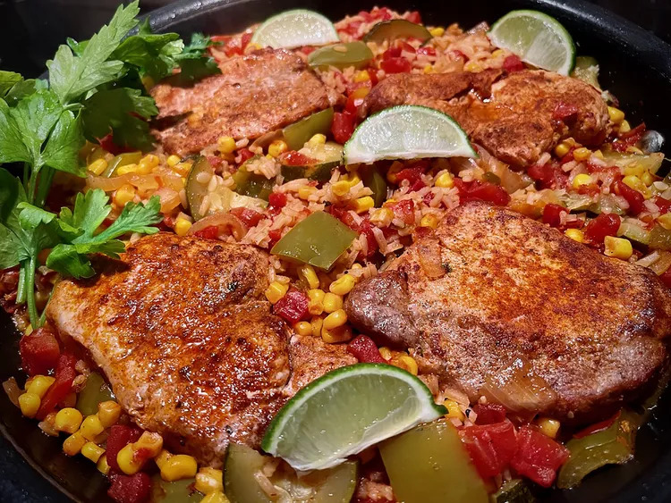

Food. We all need it so we might as well enjoy it.
And in the winter months we all need something to warm us up when the winds are howling and the snow is falling.
Welcome to my hand-curated list of three select, delicious meals forming a simple and tasty three course meal.
A hearty root veg and chicken soup, spiced with curry powder. Using a food processor will speed up the prep for this tasty recipe!

Brown some chops, then add vegetables, broth and rice. This dinner only needs one skillet, a knife, a cutting board, some measuring cups and spoons, a can opener, and a mixing and serving spoon. Add some avocado slices, if you like!
